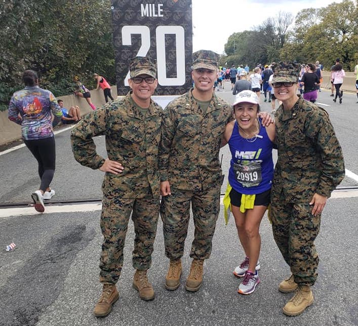

Chapel Hill Carrboro Pacers Youth Running Club |
2022 Spring Season |
|
|
Spring season registration is open REGISTRATION LINK. Email ccpacers@gmail.com for more information.
|
|
|
Tuesday March 15–Thursday June 2 |
Communication via Remind app |
|
We offer four teams depending on distance and speed: (1) Powerful puppies (former little dogs), (2) Middle dogs, (3) Hybrids, and (4) Big dogs - your athlete can initially choose their team, and then we -the coaches- might rotate them around until they find a comfortable team. Pacers is NOT competitive, we get together to run and have fun while enjoying and taking care of the outdoors and ourselves. |
The Pacers is a non-profit youth running club that has been operational since the 1970s. Boys and girls aged 7–18 join the Pacers for a competitive edge, for exercise, or just for fun. Runners are grouped according to age and ability, with shorter runs tailored for beginners and more vigorous runs for seasoned veterans. Our all-volunteer coaching staff offers creative sessions which aim to instill a love of running as a lifetime sport.
Parents are always encouraged to join our runs!
We offer spring and fall seasons. Both seasons include a mix of road and trail running, varied workouts, time trials, scavenger hunt and relay fun, and an end-of-season family party. The fall season focuses more on trail running. The spring season focuses more on road running and also offers an opportunity to focus on sprinting, and an introduction to hurdles, baton relays and field events. Coaches offer tips on such topics as running form, stretching, and nutrition at the beginning and informally throughout practices. Runners have the opportunity to join other Pacers in local races, but the emphasis is always on fun and participation with the Pacers—continually "on the run" since the 1970's!
Affiliations:Pacers is a is a 501(c)(3) non-profit
organization and a member of the USA Track and Field
Association.
Locations: Pacers meet at various locations around
Chapel Hill and Carrboro, depending on the season. Past
meeting locations have included Wilson Park, Seawell
elementary, McDougal middle school, and locations near UNC
campus.
Adverse weather: If there are storms in the area, use
your family judgement. We do run in the rain, but not in
heavy thunder/lightning. Generally, we'll try to make the call
as to whether practice will go on as scheduled by 45 minutes
prior to start at the latest and try to send an email, based
on area Doppler weather data, but sometimes communication is
not possible. If in doubt choose to stay home, or remain close
by if you can, and know that we are watching the radar and
moving runners to safety if the weather takes a turn for the
worse during practice.
Attire: Runners must be appropriately attired in
workout clothes and running shoes. These shoes don't have to
be high end, but they must be athletic shoes suitable for
running (not basketball shoes). We support Fleet Feet Sports
in Carrboro as our running community resource!
Hydration: We have a cooler of Gatorade / sports drink
available at the conclusion of each practice, but there's only
so much to go around, so please have your Pacer also bring a
water bottle with their name on it. The importance of daily
hydration increases with rising temperatures.
Boys and girls age 7 (or turning 7 during this current calendar year) through aged 18 are eligble to register. The price is $80 for one child or $150 for two siblings.
Registration details are communicated to the parent email list prior to each season. Email ccpacers@gmail.com to join the list.
Due to the overwhelming growth of the Pacers in recent years and the desire to sustain a safe and personalized program, we limit the number of runners who may participate each season. Registration is on a first-come, first-served basis with returning runners having priority.
|  |
The Pacers is led by Head Coach Eimy Rivas Plata, and welcomes veteran and new volunteer coaches including parents, members of the UNC XC Club, and middle and high school junior coaches. Pacers culture enjoys and depends on the involvement of Pacer families: parents, caregivers, siblings, grandparents. Not all are runners, but there are many opportunities. Here are some of the many of the ways family members support Pacers:
|
Here are our "Rules of the Trails" for all participants,
parents, and even coaches to study and practice. Disregard
for the rules will result in coaches speaking with parents,
and repeated infractions will initiate the disciplinary
sequence.
ON-TIME DELIVERY—Practices begin with a meet-up, including
announcements, recognition, and the occasional guest
speaker. Runners should arrive before the practice start time,
and MUST be picked up by the practice end time. Runners
arriving late should not be merely dropped off at the
trailhead, as groups run workouts away from the meet-up area;
A RUNNING CONCERN—The CC Pacers is a running
club. We understand that many Pacers will be adjusting to
running workouts on the trails, and many will get into better
shape in due time. As they are able, however, Pacers must be
able to run at the group's pace. Walking or dawdling disrupts
the group workout. Workouts are beginner-friendly but
gradually intensify over the course of the season. If a runner
is having a hard time keeping up with his / her group, please
speak to a coach. Conversely, if a runner is intentionally
walking or dawdling for attention, coaches will speak to the
runner's parent and may initiate the disciplinary sequence;
GROUP THERAPY—Once Pacers are grouped together for
workouts, runners must stay with their coaches until their
coaches dismiss them or place them under the watchful eye of
another coach;
HORSEPOWER, NOT HORSEPLAY—We are fortunate guests in the
forest and UNC XC trails. In past years, we've seen fence and
tree climbing, wrestling, playing catch with water bottles,
etc. The trails are a place for fun, but no horseplay will be
tolerated;
'LOTS' TO THINK ABOUT—Traffic will be heavy in parking area
as practice begins and ends. Pacers should stay out of the
parking lot unless getting out of or into a car or being
escorted away from the meet-up on a run by coaches. That said,
motorists should watch for children (and adults!) darting out
into traffic. No runners should cross ANY roadway unless
directly under the supervision of a coach.
KEEP IT CLEAN—We are fortunate guests one the
trails. Please leave the area better and cleaner than we've
found it.
It is a privilege to continue the traditions and legacy of Pacers in its 4th decade.